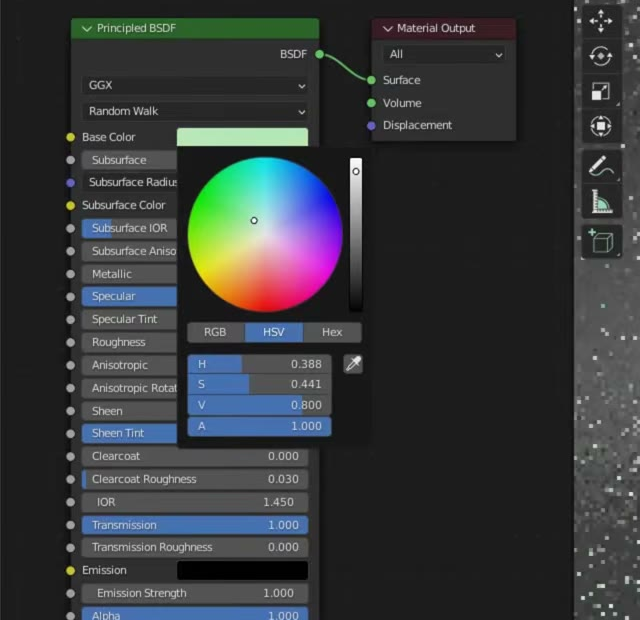
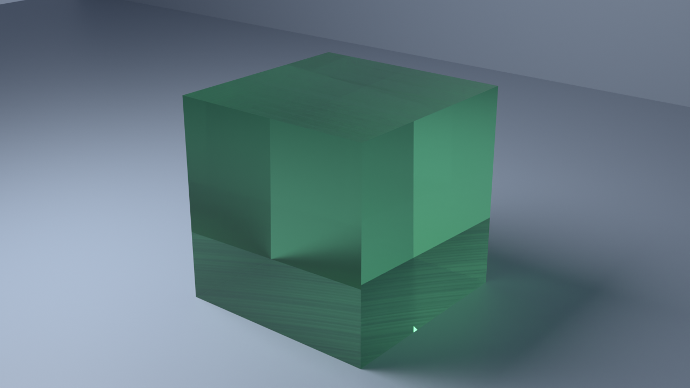

3 min 28 s of video → 80 evidence frames, each tied to its source timestamp. Two moments were re-watched at 4 frames per second.

Typed, range-checked, two-frame confirmed. Four were never said aloud. Unresolved values are refused, not guessed.
Headless Cycles on the GPU. Every socket read back equal to the compiled state — three runs, identical.

Tutorial frame vs reproduction, material only. The scene itself was never shown, so the match is partial — and it says so.
Rendered frame by frame from recorded inputs. Re-render it and compare every frame.